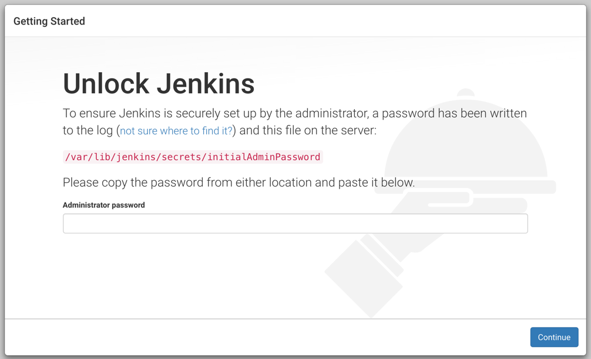

在远程服务器上搭建jenkins
2018-08-22
前言
在公司，运维都搭建好了jenkins。闲来无事，就给自己的服务器搭建jenkins。服务器系统为Centos7。jenkins发音[‘dʒeŋkinz]，詹金斯。请同学们不要再读错了。
安装
- 先查看服务器有没有安装java
1 | java -version |
如果没有安装
1 | sudo yum install java |
- 添加jenkins源
1 | sudo wget -O /etc/yum.repos.d/jenkins.repo http://jenkins-ci.org/redhat/jenkins.repo |
- 安装jenkins
在安装过程中，下载源文件过慢，大概率是网速问题，尝试切换网络。
1 | yum install jenkins |
如由于安装报错，/usr/local/jenkins is not a directory。如有在安装过程中，遇到这种错误，请新建这几个目录
1 | mkdir /usr/local/jenkins |
- 启动jenkins
1 | sudo service jenkins start |
- 端口冲突
jenkins默认端口是8080，请修改jenkins端口配置
1 | 修改 do_start 函数的 check_tcp_port 命令，端口号从 8080 换成 9000（你指定的端口） |
- 检测是否启动成功
1 | curl localhost:8080 |
curl检测启动成功之后，但是通过外部浏览器确不能访问。修改防火墙：
1 | 添加对外的8080端口 |
- 初始化密码
再次打开浏览器，如果出现下面浏览器，说明jenkins已经能对外访问了。

1 | vim /var/lib/jenkins/secrets/initialAdminPassword |
输入成功之后，需要输入账号密码，初始化账号密码为admin，054e75274f2848d6b97bc55231d74e12。
- 成功进入页面

如果登录成功之后页面显示为空白，请重试重启jenkins服务
1 | sudo service jenkins start |
OK，lets create new jobs。
参考文章：
- https://blog.csdn.net/zzy5066/article/details/72818675 Centos7上安装Jenkins
- https://blog.csdn.net/qq_24232123/article/details/79781527 centos 7.3 开放端口并对外开放
写作时间：
20180823